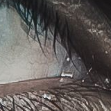
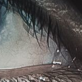
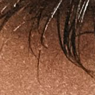
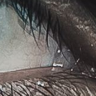
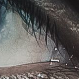
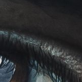
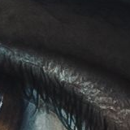
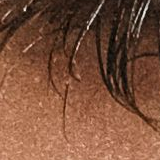
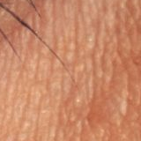
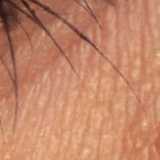

7 licensed sources; sequential selection disclosed. 8 sparse provisional upper-ending labels are not exhaustive groundtruth. Four sources no_face in both engines; no fabricated geometry. Labels frozen before inference and used only for posthoc measurement/crops. Geometry cyan=upper lid, magenta=lower lid, red/green=ROI. Full portraits below are 1080px previews; native source JPEGs and unresized views are linked. Difference maps are absolute combined-original RGB amplified8×, not effect strength.
Zoom native crops . Nearest display interpolation adds no analysis detail. Overlapping windows are not independent successes.
Original commons-radic-eyelashes.jpg — Ivan Radic, source, CC BY 2.0. Native source retained; crops/comparisons are derivatives, no endorsement. SHA256 5cc74becc6992830b32e1ba49edff8217ecdad5b3b90d5888cf81e5c193c8e69.
Original pexels-22032198.jpg — Linken Van Zyl, source, Pexels License. Native source retained; crops/comparisons are derivatives, no endorsement. SHA256 0bc6265b86e5354f3b13db63ea67b11a832206a4d924b81cb57dea7c11ebaaa1.
Original pexels-31215869.jpg — Ayşe Sude, source, Pexels License. Native source retained; crops/comparisons are derivatives, no endorsement. SHA256 cbed3fd127d9b7998772ffd95af6073f35ce465d7aefc5d1b81451635712a197.
Original pexels-32526448.jpg — atelier Moss, source, Pexels License. Native source retained; crops/comparisons are derivatives, no endorsement. SHA256 cc97727d9f549a1bf1354b5ae016c3472ecadd26f16bfe23ba329435d29eb0e3.
Original pexels-4611686.jpg — Anna Shvets, source, Pexels License. Native source retained; crops/comparisons are derivatives, no endorsement. SHA256 85ffae39a492e774c76080065e11fa4cb3823a8b3539fd2daf6a38847f159364.
F325-L1 · native160px context, not exact-tip score
original context RGB absolute sum 0production-density50 context RGB absolute sum 0recovery-density50 context RGB absolute sum 2683production-length50 context RGB absolute sum 0recovery-length50 context RGB absolute sum 0definition50 context RGB absolute sum 1626combined-natural context RGB absolute sum 2103

combined-natural · difference8× context RGB absolute sum n/a
F325-L2 · native160px context, not exact-tip score
original context RGB absolute sum 0production-density50 context RGB absolute sum 0recovery-density50 context RGB absolute sum 2228production-length50 context RGB absolute sum 10

recovery-length50 context RGB absolute sum 0definition50 context RGB absolute sum 1232combined-natural context RGB absolute sum 1668combined-natural · difference8× context RGB absolute sum n/a
F461-L1 · native160px context, not exact-tip score
original context RGB absolute sum 0

production-density50 context RGB absolute sum 40recovery-density50 context RGB absolute sum 0production-length50 context RGB absolute sum 0recovery-length50 context RGB absolute sum 0definition50 context RGB absolute sum 0combined-natural context RGB absolute sum 0combined-natural · difference8× context RGB absolute sum n/a
chromium debug maps
Maps: grayscale engineering response/confidence0..255, not calibrated probabilities. Black after early occlusion gate means NOT ANALYZED, not no hair. Traces: green=accepted, red=rejected, cyan=tip, yellow=measured tangent. Tiny working-grid plots contain no new detail. Extension diagnostics are native-image coordinates/lengths at Length50.
commons-radic-eyelashes.jpg no_face
pexels-22032198.jpg no_face
pexels-31215869.jpg no_face
pexels-32526448.jpg ready
left ridgeResponseMap · okleft densityConfidenceMap · ok
F325-L1 · native160px context, not exact-tip score
original context RGB absolute sum 0production-density50 context RGB absolute sum 0recovery-density50 context RGB absolute sum 2979production-length50 context RGB absolute sum 0recovery-length50 context RGB absolute sum 0definition50 context RGB absolute sum 2034

combined-natural context RGB absolute sum 2444combined-natural · difference8× context RGB absolute sum n/a
F325-L2 · native160px context, not exact-tip score
original context RGB absolute sum 0production-density50 context RGB absolute sum 69recovery-density50 context RGB absolute sum 3158

production-length50 context RGB absolute sum 0recovery-length50 context RGB absolute sum 0definition50 context RGB absolute sum 2041combined-natural context RGB absolute sum 2493combined-natural · difference8× context RGB absolute sum n/a
auto-right-0 · native160px context, not exact-tip score
original context RGB absolute sum 0production-density50 context RGB absolute sum 108recovery-density50 context RGB absolute sum 10276

production-length50 context RGB absolute sum 696recovery-length50 context RGB absolute sum 275definition50 context RGB absolute sum 7193combined-natural context RGB absolute sum 8539combined-natural · difference8× context RGB absolute sum n/a
auto-right-1 · native160px context, not exact-tip score
original context RGB absolute sum 0production-density50 context RGB absolute sum 108recovery-density50 context RGB absolute sum 10634production-length50 context RGB absolute sum 696recovery-length50 context RGB absolute sum 275

definition50 context RGB absolute sum 7266combined-natural context RGB absolute sum 8806combined-natural · difference8× context RGB absolute sum n/a
F461-L1 · native160px context, not exact-tip score
original context RGB absolute sum 0production-density50 context RGB absolute sum 2397recovery-density50 context RGB absolute sum 0production-length50 context RGB absolute sum 3180

recovery-length50 context RGB absolute sum 0definition50 context RGB absolute sum 0combined-natural context RGB absolute sum 0combined-natural · difference8× context RGB absolute sum n/a
webkit debug maps
Maps: grayscale engineering response/confidence0..255, not calibrated probabilities. Black after early occlusion gate means NOT ANALYZED, not no hair. Traces: green=accepted, red=rejected, cyan=tip, yellow=measured tangent. Tiny working-grid plots contain no new detail. Extension diagnostics are native-image coordinates/lengths at Length50.
commons-radic-eyelashes.jpg no_face
pexels-22032198.jpg no_face
pexels-31215869.jpg no_face
pexels-32526448.jpg ready
left ridgeResponseMap · okleft densityConfidenceMap · ok
F2-217-L1 · native160px context, not exact-tip score
original context RGB absolute sum 0

production-density50 context RGB absolute sum 0recovery-density50 context RGB absolute sum 0production-length50 context RGB absolute sum 0recovery-length50 context RGB absolute sum 0definition50 context RGB absolute sum 0combined-natural context RGB absolute sum 0combined-natural · difference8× context RGB absolute sum n/a
F2-217-L2 · native160px context, not exact-tip score
original context RGB absolute sum 0

production-density50 context RGB absolute sum 0recovery-density50 context RGB absolute sum 0production-length50 context RGB absolute sum 0recovery-length50 context RGB absolute sum 0definition50 context RGB absolute sum 0combined-natural context RGB absolute sum 0combined-natural · difference8× context RGB absolute sum n/a
chromium debug maps
Maps: grayscale engineering response/confidence0..255, not calibrated probabilities. Black after early occlusion gate means NOT ANALYZED, not no hair. Traces: green=accepted, red=rejected, cyan=tip, yellow=measured tangent. Tiny working-grid plots contain no new detail. Extension diagnostics are native-image coordinates/lengths at Length50.
F2-217-L1 · native160px context, not exact-tip score
original context RGB absolute sum 0production-density50 context RGB absolute sum 0recovery-density50 context RGB absolute sum 0production-length50 context RGB absolute sum 0recovery-length50 context RGB absolute sum 0definition50 context RGB absolute sum 0combined-natural context RGB absolute sum 0combined-natural · difference8× context RGB absolute sum n/a
F2-217-L2 · native160px context, not exact-tip score
original context RGB absolute sum 0production-density50 context RGB absolute sum 0recovery-density50 context RGB absolute sum 0production-length50 context RGB absolute sum 0recovery-length50 context RGB absolute sum 0definition50 context RGB absolute sum 0combined-natural context RGB absolute sum 0combined-natural · difference8× context RGB absolute sum n/a
webkit debug maps
Maps: grayscale engineering response/confidence0..255, not calibrated probabilities. Black after early occlusion gate means NOT ANALYZED, not no hair. Traces: green=accepted, red=rejected, cyan=tip, yellow=measured tangent. Tiny working-grid plots contain no new detail. Extension diagnostics are native-image coordinates/lengths at Length50.
Every displayed first-use07 render PNG is byte-identical to its new12 verified rerender. Both manifests and before/after JPEG/module/baseline hash sidecars are archived in files.json. Initial07 runs lacked these execution preconditions; the critic found no actual source drift. Recorded source byte map: files.json. Tile recipe/rectangles/hashes are retained in native manifests; redundant overlapping tile PNGs are omitted. Full native views and source JPEGs are retained. Restore archived paths using replay-freeend.cjs before rerunning source-freeze checks. Actual raw first-use timings are cold/order-dependent observations, not resolution-quality proof or a mobile benchmark. Physical devices UNVERIFIED. No product algorithm, gate or release changed.